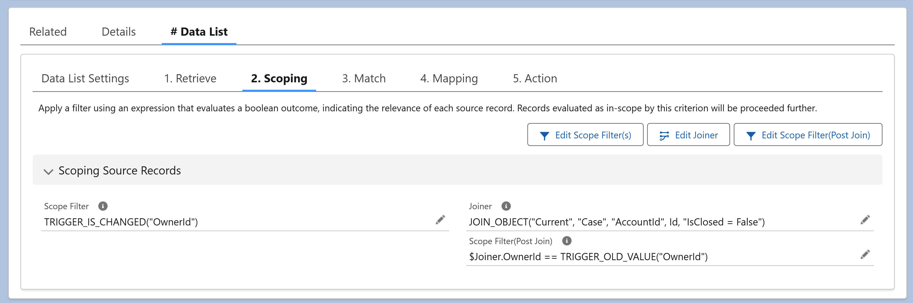

Scoping refines source data in-memory — using filters and joins — to define the exact dataset that flows into downstream processing. It's available in every DSP rules engine: #Batch, #Data List, #Trigger, #Action Button, and #Data Loader.
Key functions:
Scoping is intended for advanced data shaping that can't be expressed in the initial SOQL query (Retrieve). It runs after data is retrieved or uploaded — but before Match, Mapping, and Actions.
